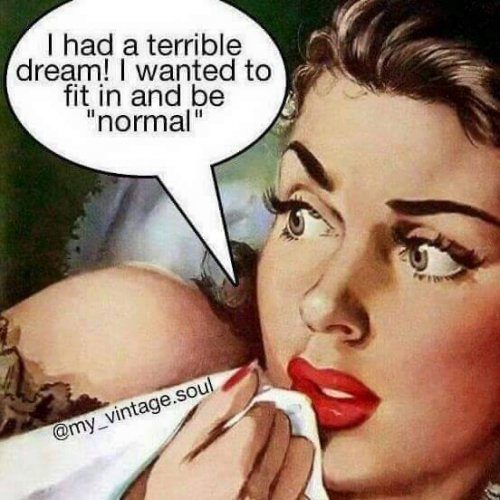

― U.G. Krishnamurti
"The separate something looks for wholeness."
--Tony Parsons
Things come in waves in my work, and lately there’s been a wave of folks looking to have sessions because of the word, “Normal.”
As in, they’re not.
They’re not normal because they’re socially awkward or lacking confidence or angry all the time. Not normal because they don’t have a career, or don’t care about the planet, get too jealous, care too much about their looks.
They don’t do the right things, feel the right things, say the right things, or want the right things.
As it turns out, even though we all claim to understand that there is no such thing as normal, still, almost everyone feels that there’s something not right about ourselves.
Something not good enough, something off, something not typical.
Not to say that we don’t enjoy and aren't proud of our unique little quirks, as long as they’re not completely unique. As long as our oddities fit in with some liked group- successful business people, for example, or goths, or neurodivergents, Star Wars nerds, artists, addicts, freedom fighters.
Within those groups, our version of a right self desires to be like the others. And not being typical in the preferred group always means, “Wrong.”
As in- This Me is wrong. This Me is failed. This Me is broken.
The thing is, no matter what the group, who among them is always confident, never says the wrong thing, is never selfish, never guilty, never fails at work or sports?
No one, that’s who.
No one is normal and just like other normals.
Perhaps because life, or existence, or consciousness, is not sitting around wanting 8 billion humans to all be exactly the same.
So it seems there’s a reason we say things to ourselves like, “Ok now, act normal.”
Because trying to be normal requires acting, faking it, putting on a show.
Which makes sense. Of course the sense of self has to pretend to be something it’s not.
Because the self is not anything.
So If we’re going to pretend the self is real and constant and a something, then we have no choice but to try to act like those others who seem to have figured out
how to make nothing into something.
And we also have no choice but to then feel that in-the-background sense that we can’t do it, and something isn’t right, and we just don’t have that whatever-it-is that everyone else seems to have.
Key word being “Seems.”
Since after all, their self is no more real than ours.
We might also notice that we can’t conclude that we’re inherently wrong or not enough, without comparing.
Comparing our lives to ads, tv commercials, books or movies.
All of which are fiction.
Or comparing our lives to that of other people we know, people whom we are certain don’t have these problems.
Comparing this not-real self to those not-real selves.
“Normal” requires others.
And it starts to be clear that what we actually yearn for, what we really want to be normal for (because otherwise what good is it), is to be like others so that we can be
part of something. Integral. Included.
By hoping to be normal, we are longing to disappear into wholeness.
Not realizing that we can be distinct individuals and also be included in, absorbed by, the whole.
Like snowflakes, each person unique and beautiful and distinctly itself, while also being an indispensable part of the bigger blanket of snow.
Unique and the same, separate and included, simultaneously.
So. Stay quiet in social situations, or say something that causes others to stare? Included. Yell at neighbors, do drugs, resist therapy? Included. Be afraid to leave the house? Fail at every job ever touched? Walk naked down the street yodeling with spoons swinging from our nipples? Yep-all still included in the whole.
It is impossible to not be part of that vast completeness.
Making even our often-hated wrongness, oddballness, and strangeness,
our regrets, bad feelings, and painful disappointments
Beautiful.
And normal.
And inherently vital
For the completeness of
That all-encompassing blanket.
"I never told you there was anything wrong with you. If I made you, I filled you with passions, limitations, pleasures, feelings, needs, inconsistencies. How can I punish you for being the way you are, if I'm the one who made you? What kind of God would do that?
My beloved, this life is not a test, not a step on the way, not a rehearsal, nor a prelude to paradise.
This life is the only thing here and now and it is all you need."
--Baruch de Spinoza,
speaking for God
--Watch Judy on Buddha at the Gas Pump
--Watch Judy and Shiv Sengupta discuss spiritual anarchy
--Click to watch Judy and Walter Driscoll have fun chatting about about nonduality, the self, consciousness, awareness, free will and other light and breezy stuff
--Watch Judy and Robert Saltzman talk nonduality
